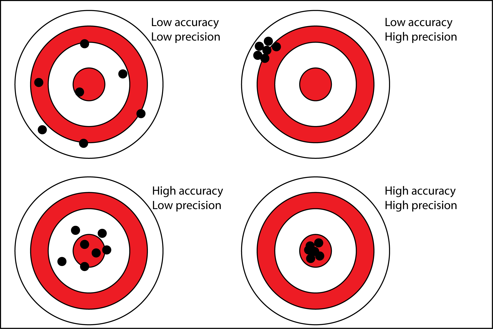
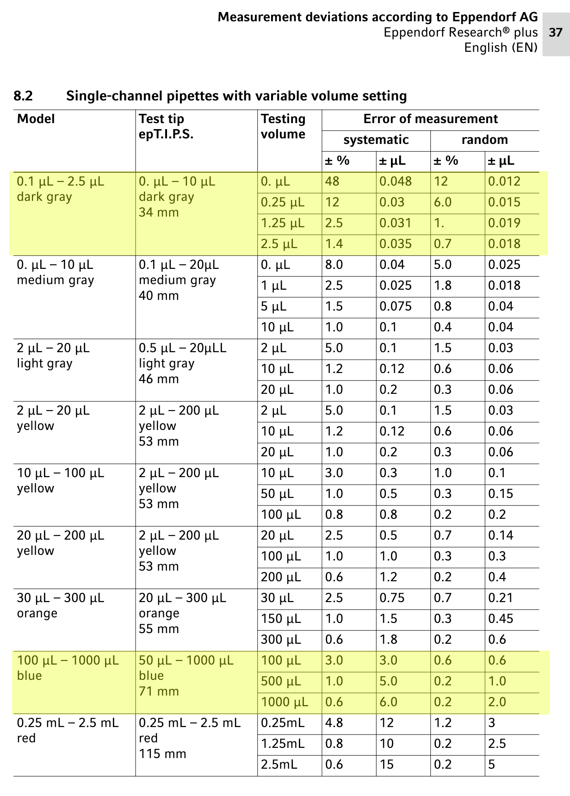

01 Micropipette Measurement and Error Lab
Micropipettes are standard equipment in the molecular biology lab. Like all experimental equipment they are imperfect, meaning that they have error.
Error
Error is an important concept for all scientists - we already know any measurement we make is imperfect, but even more important to a scientist is that we try to describe how much error our measurements may contain.
Two ways we can describe this is to talk about a measurements'
- Accuracy (How much a measurement/observation differs from the true value)
- Precision (If we take a measurement many times, how closely will those different measurements/observations agree)
Here are some figures that illustrate these points
As a graph
[Credit: Pekaje at English Wikipedia - Transferred from en.wikipedia to Commons. Created by Pekaje, based on PNG version by Anthony Cutler, using en:xfig, en:inkscape, and en:HTML Tidy]
As an anology with darts

[Credit: http://cdn.antarcticglaciers.org/wp-content/uploads/2013/11/precision_accuracy.png]Pipetting Exercise
Based on DNA Science A First Course - Second Edition: Micklos, Freyer, Crotty
Complete the following instructions with our colored solutions to test our pipette error. If you have the Grey Pipette use this table:
| Tube | Sol. I | Sol. II | Sol. III | Sol. IV |
|---|---|---|---|---|
| A | 4 ul | 5 ul | 1 ul | - |
| B | 4 ul | 5 ul | - ul | 1 ul |
| C | 4 ul | 4 ul | 1 ul | 1 ul |
- Use a marker to label three tubes A, B, and C
- Use the table above to add the required amount of solution to each tube
- Use a centrifuge to spin all the solutions down to the bottom of the tubes
- Using a grey pipette set 10 microliters, test and see if each tube actually has the full 10ul volume. You can adjust the volume down until there is no air to get the actual measurement.
If you have the Blue Pipette use this table:
| Tube | Sol. I | Sol. II | Sol. III | Sol. IV |
|---|---|---|---|---|
| D | 100 ul | 200 ul | 150 ul | 550 ul |
| E | 150 ul | 250 ul | 350 ul | 250 ul |
- Use a marker to label three tubes D and E
- Use the table above to add the required amount of solution to each tube
- Using a blue pipette set 1000 microliters, test and see if each tube actually has the full 100ul volume. You can adjust the volume down until there is no air to get the actual measurement.
Error table
According to Eppendorf, pipettes should have the following amount of error (pipettes we used are highlighted)

So for example, a blue pipette measuring 1000ul can will typically have up to 0.6 percent error. We can calculate this in the following cell:
# 1000ul multiplied by 0.6%
1000 * 0.006
6.0
So, our measurement is usually off by about 6 microliters. This is the systemic error. If we also add the random error we get:
# 1000ul multiplied by 0.6% + 0.2%
1000 * (0.006 + 0.002)
8.0
Including the random error we can be off by as much as 8 microliters.
Calculating the difference in error
If we know what our expected error is (e.g. 8ul) what if our observed error is more than this (lets say 15 ul). What is the difference?
Expected_error = 8
Observed_error = 15
#abs stands for absolute value
difference_in_error = abs(Expected_error - Observed_error)/((Expected_error + Observed_error)/2)*100
print(difference_in_error)
60.86956521739131
In our example above there was a 60% difference. Given your values, what percent error did you see?
# change these two number to what are correct in your case
Expected_error = 8
Observed_error = 15
#don't change this!
difference_in_error = abs(Expected_error - Observed_error)/((Expected_error + Observed_error)/2)*100
print(difference_in_error)